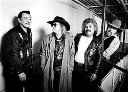
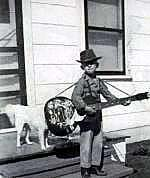
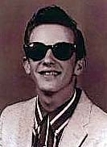
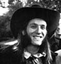
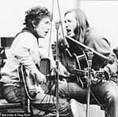

who's who
who's who  who's who
who's who  |
Texas Tornados
|

Первое выступление Дуга Сэма по радио Сэн-Энтоун состоялось, когда ему исполнилось пять лет, считался вундеркиндом игры мандолине, скрипке и на гитаре-стилл (!). Маленький Дуг Сэм (Little Doug Sahm) продолжал регулярно выступать в радиопрограммах кантри-музыки. Ему было 11 лет, когда легендарный Хэнк Уильямс пригласил его на сцену своего концерта в Остине.О своем детстве, Дуг писал: " Через распаханное поле от моего дома было местечко под названием "Иствудский сельский клуб". В любой вечер там можно было услышать Вы имели T-Bone Walker, Junior Parker, The Bobby 'Blue' Bland Review, Hank Ballard and James Brown... Лет в двенадцать-тринадцать лет у меня был сосед Гомер Кэллахан, рыжий ирландец, который любил подраться и послушать Howlin Wolf'. Он притаскивал эти великолепные сорокопятки с разноцветными нашлепками (фирм) Excello, Atlantic, and Specialty, таких чуваков как Lonesome Sundown, Jimmy Reed, and Fats Domino. Моя мать, благослови ее душу, не могла понять почему эти пластинки оказывают столь глубокое воздействие на ее белого сына, который быстро набирал вес в преобладающе черной секции Сан-Антоун... Имейте в виду, что, хотя это не были гетто с уличной преступностью, но для белого мальчика быть принятым в (клуб) "Зал Черного дерева" (The Ebony Lounge) было все равно, что подписать контракт с "Нью-Йоркским Янки".

Еще подростком Сэму были предложены регулярные выступление в главном зале кантри-музыки Grand Ol' Opry, в столице кантри - городе Нэшвилл. Но его мать решила, что ему следует остаться дома и закончить сначала среднюю школу. Однако и в школе он собирал музыкальные группы и даже продолжал выпускать пластинки на местных фирмах грамзаписи. Примерно в 1960-м году он познакомился с Оги Мейерсом (Augie Meyers), сыном бакалейщика, которому предстояло стать его другом и музыкальным партнером на протяжении всей жизни. Оги научился играть на гитаре и фортепиано, чтобы преодолеть онемение рук, последствие полиомиелита, и к тому времени играл в собственной группе. В будущем Дуг Сэм будет фронтмэном групп Knights, the Pharaohs, the Dell-Kings, the Markays, the Sir Douglas Quintet, и the Doug Sahm Band, кроме вышеназванных. Но, фактически, все эти воллективы представляли из себя творческий союз Дуга Сэма и Оги Мейерса, подкрепленный теми музыкантами, кого они приглашали для воплощения каких-то своих новых идей.В 1964г. группы Дуга Сэма и Оги Мейерса открывали техасские концерты британских гастролеров Dave Clark Five.

История гласит, что один техасский продюсер решил озадачиться успехом "Британского Вторжения" на американскую эстраду и, запасшись вином и полным собранием тогдашних пластинок "Битлз", заперся в номере гостиницы, решив не выходить, пока не решит загадку. Он вышел с решением "Упор на бит, как в кейжунском ту-степе". После он вызвал к себе Сэма, велел отрастить волосы, собрать группу и сочинить песню с кейжуновский тустеповым ритмом. Группа была собрана из музыкантов Дуга Сэма и Оги Мейерса. А продюсер дал им имя, которое могло бы сойти за британское название: "Квинтет Сэра Дугласа". В 1965г. их песня "She's About A Mover" стала хитом по обе стороны Атлантики. Специалисты утверждают, что это была смесь техасского попа с битловской "She's A Woman".После краткого ареста за хранение марихуаны, Дуг Сэм в марте 1966г. отбывает в хипповый Сан-Франциско, где он прожил пять лет и выпустил свои первые альбомы.
Классифицировать музыку Сэма строго по стилю почти невозможно. Кантри, рок, Уэстерн-свинг, Текс-мекс, полька и блюз - все являются частью его творчества. "Я частично в мире Уилли Нельсона (Willie Nelson), а частично - в мире "Грейтфул дэд" (Grateful Dead), - говорит Дуг Сэм. - Я никогда не укладывался в один пакет. Когда я играл вместе с (исполнителем кантри) Элвином Кроу на стилл-гитаре, меня называли Уэйном Дугласом. А Дуг Салдана - это имя дали мне мексиканцы. Они говорили, что во мне столько мексиканского, что мне нужно мексиканское имя".

В 1973г., на излете эры супер-групп, для фирмы "Mercury" был записан альбом Doug Sahm And Band с участием Боба Дилана (Bob Dylan) и Доктора Джона (Dr. John). В 70-х вместе с группой или в одиночку он появляется в нескольких кино-фильмах.В 1983 на два года уезжает работать в Швецию, где его альбом "Midnight Sun" становится одним из самых популярных в истории страны. "У нас бывали погромы на сцене, - вспоминает Дуг. - Шведские телки выбегали на сцену, валили меня с ног и срывали с меня одежду". Затем последовали три года работы в Канаде. Но, получив контракт с остинской фирмой "Энтоунз", возвращается в родной Техас. В 1989г он гастролирует вместе с певицей Анжелой Стрелли (Angela Strehli) и аккордеонистом Флако Джименецом Flaco Jimenez как участник "Antone's Texas R&B Revue."
В 1989г. он собирает текс-мексиканский аналог "Странствующих Уиллберри" - группу "Техасские Торнадо" (Texas Tornados). В ней он снова работает с Оги Мейерсом и Флако Джименецом. Дискография группы насчитывает 6 альбомов, включая "Greatest Hits". Один из них был удостоен "Грэмми". В 1994г. был возрожден "The Sir Douglas Quintet", в котором теперь играют сыновья Сэма: Shawn Sahm and Shandon Sahm. Другой его альбом того же года носил программное названием "The Last Great Texas Blues Band" - "Последний великий техасский блюзбэнд".
В 1999 году, исполняя давнюю мечту поддержать техасскую музыку надежной продюсерской основой, Дуг Сэм организовал музыкальную фирму "Tornado Records".TEXAS TORNADOS:
Наиболее полная дискография CD с участием Дуга Сэма по состоянию на декабрь 1999
сайт "Винилловый турист" посвятил Дугу Сэму отдельную главу и собрал лучшие ссылки на вэб-страницы, ему посвященные: http://catalog.com/arts/sdq_hist.htm
Бывшие новости |
Январь-Февраль 1999 |
Март 1999 |
Ноябрь-Декабрь 1999
Январь 2000 |
Февраль 2000 |
Март 2000 |
Апрель 2000
{kind=link}